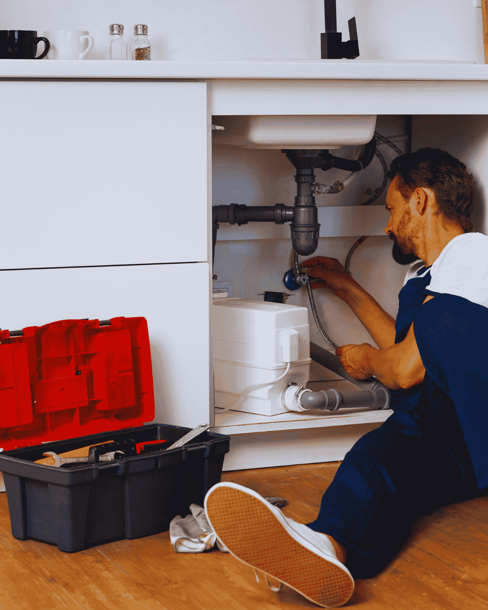

An emergency plumber in Boynton Beach should do two things fast: stop the water and tell you what it costs. That is how this line works. You call (833) 567-2788, a person answers, and a licensed plumber is routed to your address with an arrival window you can plan around.
Water damage grows by the minute. A half-inch supply line that lets go can push more than 50 gallons of water into a room in ten minutes. Drywall wicks it up. Baseboards swell. In a Florida summer, mold starts inside a day or two. Speed is not a luxury on this kind of call.
Before the truck arrives we walk you through shutting off the right valve. Most Boynton Beach homes have a main shutoff near the hose bib on the street side, or at the meter box by the sidewalk. Turning that one handle often saves thousands of dollars in repairs.

Warning signs
When You Need an Emergency Plumber in Boynton Beach, Not a Morning Appointment
Some plumbing problems can hold until morning. These cannot. If you see any of the following, shut off the water and call now.
- Water spraying or pouring from a pipe, valve or water heater
- Sewage backing up into a tub, shower or floor drain
- No water at any fixture in the house
- A hot water heater that is leaking from the tank body
- A gas smell near a water heater, range or gas line
- A toilet overflowing that will not stop with the shutoff closed
- A ceiling stain that is growing while you watch it
- Water bubbling up through a slab floor or at the base of a wall
Not sure if it counts as an emergency? Call anyway. We will tell you honestly whether it can wait until morning, and morning appointments cost less.
What the visit includes
What an Emergency Plumbing Repair Visit Includes
The order never changes. Contain the damage, find the cause, price the repair, then fix it.
Stop the water
We isolate the failed line at the closest valve, or the main, so the flow stops before anything else happens.
Find the cause
A quick inspection of the fixture, line or appliance. On hidden leaks we bring in acoustic and moisture tools.
Price it in writing
A flat price for the permanent repair, plus any temporary fix needed tonight. You approve before work starts.
Repair and test
The line is repaired, pressure tested and left dry, with photos of the work for your insurance claim.
Water still running?Call now and we will talk you through the shutoff while a plumber is dispatched.

Damage control
How to Shut Off Water and Gas Before the Plumber Arrives
The ten minutes before help arrives decide how expensive the day becomes. A half-inch supply line can push more than 50 gallons into a room in that time, and in Florida humidity mold begins within a day or two.
Find your main shutoff now, not during the flood. In most Boynton Beach homes it sits on the street side of the house near a hose bib, or inside the meter box at the sidewalk. Turn it clockwise until it stops, then open the lowest faucet in the house to drain remaining pressure out of the pipes.
Isolate the appliance if you can. Water heaters, toilets, dishwashers and washing machines each have their own valve. Closing that one valve keeps the rest of the house in water while you wait.
Kill power to wet areas. If water is near outlets, a panel or a water heater, switch off the breaker for that circuit before you walk through it.
If you smell gas, leave. Do not touch light switches, do not use a phone indoors, and call the gas utility from outside. Then call us for the repair once the line is safe.
Photograph everything. Wet flooring, the failed part, the ceiling stain. Insurers pay faster on sudden water damage when the documentation starts before cleanup does.
Boynton Beach conditions
Why Boynton Beach Gets So Many After-Hours Calls
Two local factors drive most emergency plumbing calls in this city. The first is age. A large share of housing east of Congress Avenue went up between 1955 and 1979. Those homes still hold original cast iron drain lines and galvanized supply pipe. Both fail suddenly rather than slowly.
The second is water chemistry. Palm Beach County water carries real hardness, and scale builds inside water heaters and angle stops for years without a symptom. Then a valve stem gives out at nine at night and the laundry room floods.
Storm season adds a third layer. Heavy rain raises an already shallow water table. Sewer laterals with root intrusion take on groundwater, and a line that drained fine in March backs up in September. If your home floods every rainy season, the fix is a camera inspection, not a plunger.
We run emergency trucks through Boynton Beach, Delray Beach, Lantana, Hypoluxo, Ocean Ridge and West Palm Beach, so a licensed plumber is usually minutes away instead of hours.
Insurance and documentation
Emergency Plumbing Repair and Your Florida Homeowners Claim
Most Florida policies treat sudden and accidental water damage as covered, while slow, long-term seepage usually is not. That distinction is why the paperwork from an emergency visit matters as much as the repair itself.
What your adjuster will ask for
They want the date and time of the failure, the cause, the part that failed and proof the leak was stopped promptly. We photograph the failed component before removing it, note the time of arrival on the invoice and list the specific repair performed rather than a vague line item.
Where claims commonly go wrong
Two mistakes cost homeowners money. The first is cleaning up completely before documenting the damage. The second is delaying the repair, which lets the insurer argue the damage was gradual rather than sudden. Calling immediately protects both the house and the claim.
Mitigation is your responsibility
Florida policies require reasonable steps to prevent further damage. Shutting the water off, moving furniture off wet flooring and getting air moving all count. Keep receipts for anything you buy to do it, including fans and dehumidifier rental.
We are not adjusters and we do not negotiate claims. What we can do is leave you with a clear, dated record of what failed and what was repaired, which is exactly what the claim needs.
Pricing
Emergency Plumbing Cost in Boynton Beach, FL
Emergency work costs more than a scheduled visit. That is true everywhere, and we would rather say it plainly than hide it in the invoice. What you should never pay is an open-ended hourly rate with no ceiling.
You get a price range on the phone and a firm flat price at your door. If the repair turns out to be smaller than expected, the price drops. It does not climb.
- Time of day and day of week
- Whether the water can be isolated or the main has to stay off
- Access to the failed pipe, such as slab, wall or ceiling
- Parts needed, and whether a fixture must be replaced
- Permit requirements for water heater or gas work
- Whether drying and cleanup support is needed
Get the number before you book. Call (833) 567-2788 and describe the problem. You get a realistic price range on the phone and a firm written price at the door, before any work begins.
FAQs
Emergency Plumbing FAQs
Do you answer the phone after hours?
A person answers rather than a voicemail box, and after-hours emergency calls are dispatched as they come in. You get an arrival window before you hang up.
How do I shut off my water in a hurry?
Look for the main valve where the supply enters the house, usually near a hose bib, or in the meter box at the curb. Turn it clockwise until it stops. Then open a low faucet to drain the pressure.
Will my insurance cover this?
Sudden and accidental water damage is usually covered. Slow leaks often are not. We photograph the failed part and the damage so you have documentation for the claim.
Can you handle sewage backups?
Yes. We clear the blockage, camera the line to find the cause, and tell you whether it is a one-time clog or a broken lateral that needs repair.
What if the emergency turns out to be minor?
Then you pay for a minor repair. The written price reflects the actual work, not the panic of the phone call.
Related plumbing services
Emergency Repairs Often Lead to These Plumbing Services
Problems rarely arrive alone. These are the services homeowners most often book alongside this one.
Emergency Plumber
When a supply line lets go or sewage comes up through a floor drain, the first job is stopping the water and the second is telling you what the repair costs. Our emergency plumbers in Boynton Beach walk you through the shutoff on the phone, arrive with a stocked truck, and hand you a written flat price before anything is opened up.
See Emergency Plumber details →Drain Cleaning
Slow showers, gurgling sinks and a main line that backs up every few months are rarely one hair clog. They are grease, scale and old cast iron that has narrowed over decades. We clear the blockage with cabling or hydro jetting, then camera the pipe so you can see whether it was a clog or a damaged line causing it.
See Drain Cleaning details →Water Heater Repair & Installation
No hot water, rusty hot water or a puddle under the tank each point somewhere different. We test elements, thermostats, gas valves and the anode rod before quoting, because a failed part costs a fraction of a new heater. When the tank really is finished, we replace 40 to 80 gallon units with the permit and haul-away included.
See Water Heater Repair details →View all 16 plumbing services →
Emergency Plumber Near You in Palm Beach County
- Emergency Plumber in Delray Beach
- Emergency Plumber in Lake Worth Beach
- Emergency Plumber in Lantana
- Emergency Plumber in Boca Raton
- Emergency Plumber in Wellington
- Emergency Plumber in Greenacres
- Emergency Plumber in Hypoluxo
- Emergency Plumber in Ocean Ridge
- Emergency Plumber in Manalapan
- Emergency Plumber in Palm Springs
- Emergency Plumber in West Palm Beach
- Emergency Plumber in Highland Beach
Water running right now?
Shut the main off and call. A licensed emergency plumber is dispatched to your Boynton Beach address immediately.